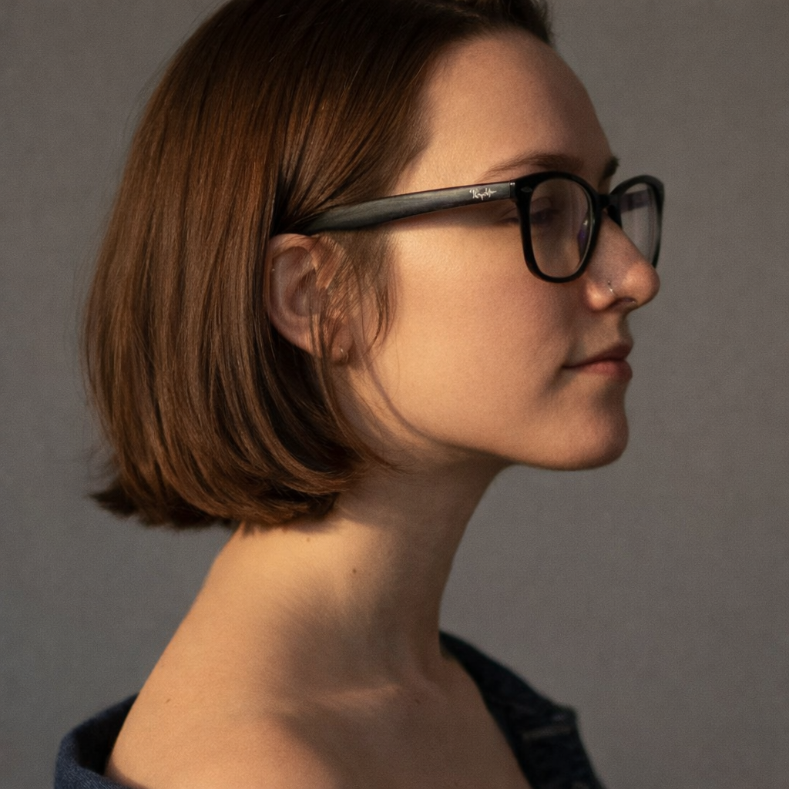

Escritora · Correctora · Ghostwriter
Esta es mi historia
Desde los anales de mis recuerdos tengo presente esa cálida tarde de verano en la que me quedé prendada de Lavinia Whateley.
Ese personaje recorrió todos los recobecos de mi persona, como un escalofrío que llegó a lugares a los que ningún otro personaje había llegado. Y pensar que surgió de la mente de un mortal como tú y como yo es si cabe el hecho que más me conmovió.
Sí, Lovecraft fue humano aunque cueste creerlo. De su puño nacieron personajes como Lavinia y mitos eternos que inspiraron cientos de obras posteriores, al igual que a mí.
Y no solo sirvió como inspiración en mi obra, porque la experiencia y leer más y más y formarte en este mundo de la escritura te lleva a caminos y ramificaciones inmensas y remotas. Me refiero más a la motivación principal. Te das cuenta de que amas esos relatos, esos personajes, esos munndos y que en mi cabeza hay mundos más bellos, más profundos, más personales y que puedo compartirlos con el mundo para que disfruten conmigo de estos lugares inóspitos de mi cabeza.
Si a mí me conmueven al igual o más que esos sempiternos relatos antiguos, ¿por qué no pueden conmoverte a ti?.
Y escribí y escribí y a día de hoy, aunque parezca mentira después de tantas palabras escupidas todos estos años, sigo con cosas que contar. Con la ilusión de una adolescente por que me acompañen en el mar de palabras que llenan mis relatos.
